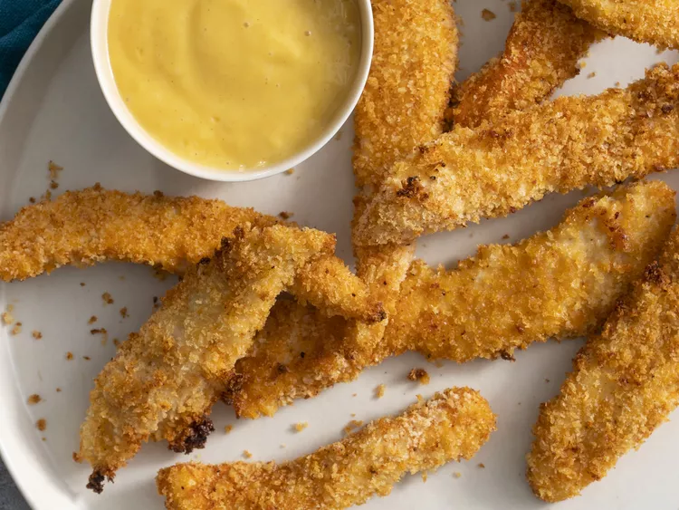

Chicken Tenders

Description
This recipe is so easy you won't believe it. In 10 minutes you'll have a yummy dish that with a side of salad will make the perfect dinner. The chicken tenders are coated in a crispy flavoured coat and cooked in the oven.
Ingredients
- Egg
- Chicken tenders
- Paprika
- Garlic powder
- Onion powder
- Bread Crumbs
Steps
- Beat the egg in a bowl
- Put bread crumbs and all the spice in a zip bag
- Dip the chicken in the egg and then put it in the zip bag and shake to coat.
- Put the tenders on a foil lined baking sheet. Repeat for all the tenders.
- Sprinkle some oil on the tenders.
- Cook at 230° C for 7 minutes on each side.